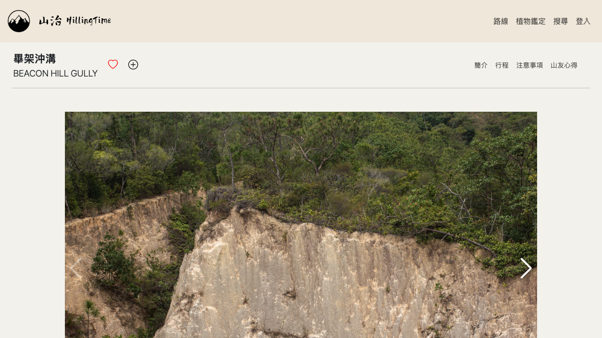

👋 Greetings, I’m Adams Ip (Ip Zhuo Xuan)
Software Engineer & Technical Instructor from Hong Kong | Relocating to
the UK
Linkedin:
adams-ip
| GitHub:
airommel
Mentored Student Projects
Not all mentored projects are included.
Sign Language Online Learning Platform
My role: Technical mentor (Tecky Academy) — guided
PoseNet and FaceMesh integration for real-time tracking, advised on
backend/frontend separation, and architected the GitHub Actions
CI/CD pipeline deploying to AWS. Codebase authored by the student
team.
A web-based educational platform that teaches sign language using
in-browser pose detection. Learners follow a sign and are graded in
real time by the AI system against reference key-points.
Tech Stack: PoseNet, FaceMesh, Express, TypeScript, Node.js,
PostgreSQL, GitHub Actions, AWS EC2
GitHub Repo
Personal Fitness Social App
My role: Technical mentor (Tecky Academy) — guided
React Native structure, real-time chat with Socket.io, and AWS
deployment; reviewed PRs and unblocked data-sync issues between
frontend and backend. Codebase authored by the student team.
A mobile social app matching users with fitness partners based on
shared goals, with in-app chat and progress tracking.
Tech Stack: React Native, TypeScript, Node.js, Socket.io, PostgreSQL,
GitHub Actions, AWS
GitHub Repo
Online On-demand Delivery System
My role: Technical mentor (Tecky Academy) — guided
the YOLOv8/PyTorch model integration, WhatsApp API messaging flow,
and OAuth2 authentication; reviewed the CI/CD pipeline for production
readiness. Codebase authored by the student team.
An end-to-end on-demand delivery platform with real-time order status
tracking and a YOLOv8 computer-vision classifier in the order-intake
pipeline. Notifications are dispatched via WhatsApp; auth handled via
OAuth2.
Tech Stack: Node.js, Express, TypeScript, Python, PyTorch, YOLOv8,
PostgreSQL, GitHub Actions, AWS
GitHub Repo
Pettier 2024
My role: Technical mentor (Tecky Academy) — directed
architecture, reviewed PRs, and debugged production blockers across a
tight 2–3 week sprint. Codebase authored by the student team.
A pet-care services marketplace connecting owners with providers.
Features Stripe-backed payments with held/release funds, multi-role
accounts (clients, providers, admins) with identity verification, an
all-in-one task dashboard with calendar, and real-time booking updates
via Socket.io.
Tech Stack: React, Node.js, Express, TypeScript, PostgreSQL, Knex,
Stripe, Socket.io, AWS S3
GitHub Repo
HillingTime 2024
My role: Technical mentor (Tecky Academy) — directed
the Node.js/Python cross-language architecture, reviewed PRs, and
guided the TensorFlow plant-classifier integration. Codebase authored
by the student team.
A hiking-trail discovery web app for Hong Kong with an AI-powered
toxic-plant classifier. Trails are browsable by district with
difficulty, duration, and Google Maps integration; users can upload a
photo of a plant and have it classified by a TensorFlow model served
from a separate Python (Sanic) microservice behind the Node/Express
API.
Tech Stack: TensorFlow, TypeScript, Python, Node.js, Express, Sanic,
PostgreSQL, Knex, Google Maps API
GitHub Repo


All projects above were developed by student teams under my mentorship
within a tight 2–3 week timeframe.